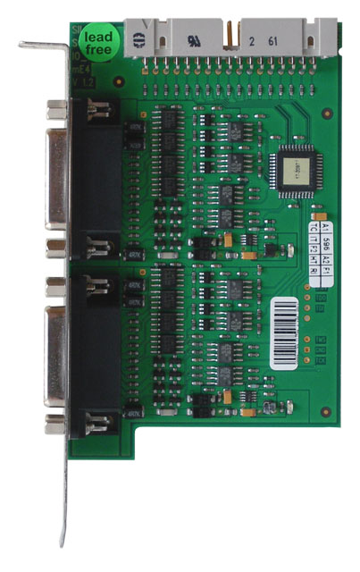
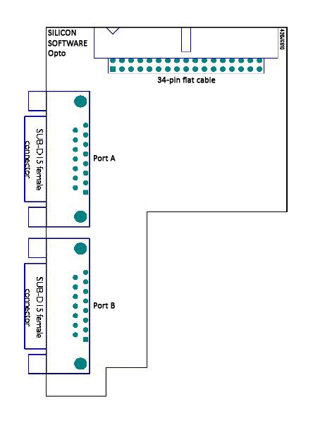
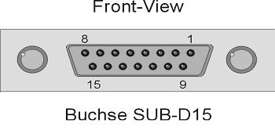
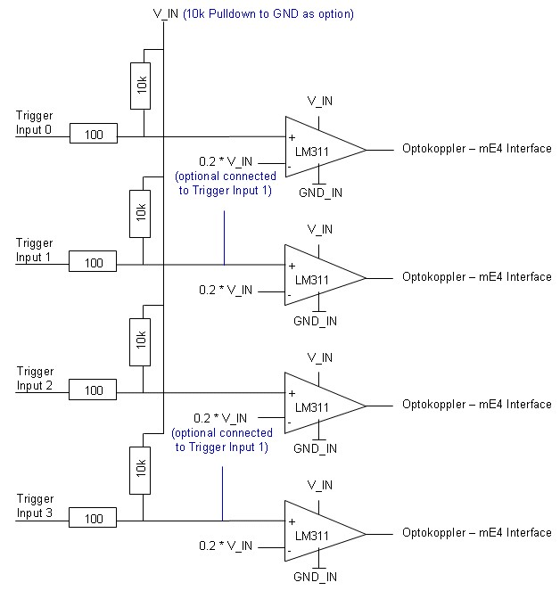
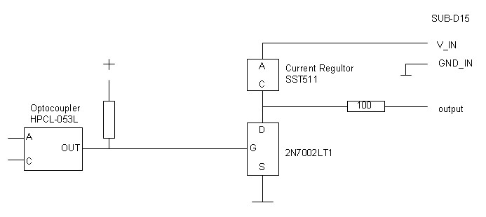

| . |
The I/O Opto-Coupled Trigger Boards for microEnable IV and microEnable 5
Runtime Software Version 5
User Manual
The Silicon Software OPTO trigger boards offer a comfortable opportunity to use opto-coupled trigger signals for controlling cameras and external peripheries. Also, several microEnable frame grabber boards can be synchronized most easily using an OPTO trigger board. The fast electronics of the trigger board and the hardware-based processing of the signals on the microEnable frame grabber guarantee small latencies. For more information on how an Opto trigger board can be used for various tasks within a trigger system, refer to the microEnable Trigger System documentation.

At the moment, Silicon Software offers OPTO trigger boards in 6 different flavors. The six models differ in their inputs, i.e., in number and types of their inputs (see table below).
Each Opto trigger board has 8 outputs. If you have special needs, please contact our Silicon Software Sales Department or your local sales representative/distributor.
|
Number /Type of Inputs, Pins* |
Pull-Up/Pull-Down | Art. Nr. |
Notes |
|
|
Opto Trigger IV (classic) |
8 singled ended (Port A+B) |
all inputs with pull-up resistor | 101266 | |
|
Opto Trigger IV Pull-Down (classic) |
8 single ended (Port A+B)
|
all inputs with pull-down resistor | 101433 | |
|
Opto Trigger IV DS Pull-Up |
4 differential (Pin 11, 13 of Port A+B ) |
all inputs with pull-up resistor | 101435 | |
|
Opto Trigger IV DS Pull-Down |
4 differential (Pin 11, 13 of Port A+B )
|
all inputs with pull-down resistor | 101437 | |
|
Opto Trigger IV DS/SE Pull-Up |
4 single ended (Port A) |
all inputs with pull-up resistor | 101443 | 6 inputs in sum |
|
Opto Trigger IV DS/SE Pull-Down |
4 single ended (Port A) 2 differential (Pin 11, 13 of Port B ) |
all inputs with pull-down resistor | 101444 | 6 inputs in sum |
*The pin numbers are related to the SUB-D15 female plugs on the Opto trigger board. The upper one is called Port A, the lower one Port B (see figure below).
For detailed information refer to the following sections, especially Section 8.
Content
| 1 | Connector Naming Conventions | |
| 2 | Installation | |
| 2.1 | Requirements | |
| 2.2 | Software Installation | |
| 2.3 | Hardware Installation | |
| 3 | Functional Description | |
| 3.1 | Overview | |
| 3.2 | Opto Coupling | |
| 3.3 | Output Signals | |
| 3.4 | Input Signals | |
| 3.5 | Multiboard Usage | |
| 4 | LED | |
| 5 | Timing Characteristics | |
| 5.1 | Outputs | |
| 5.2 | Inputs | |
| 6 | Electrical Characteristics | |
| 6.1 | Outputs | |
| 6.2 | Inputs | |
| 7 | Pin Configuration | |
| 7.1 | Pin Configuration SUB_D15 | |
| 7.2 | Pin Configuration Flat Cable | |
| 8 | Schematic Drawing |
1 Connector Naming Conventions

|
Module |
Type |
Function |
|
Trigger Connector A |
SUB-D15 female |
Port A Input and Output of up to four signals each |
|
Trigger Connector B |
SUB-D15 female |
Port B Input and Output of up to four signals each |
|
Flat Cable |
34-pin Flat Cable Connector |
Cable connection to frame grabber |

2 Installation
2.1 Requirements
- One or more microEnable frame grabber(s), plugged into PCIe slot(s) of the PC.
- Frame grabber runtime installation.
2.2 Software Installation
There is no need to install any other software in order to use the Opto Trigger boards.
2.3 Hardware Installation
- Plug the Opto trigger board into one of the PC's empty slot brackets.
- Connect the flat cable connector of the Opto trigger board to the frame grabber via 34-pin flat cable.
- If there are further frame grabbers to connect: Use the flat cable connector of the Opto trigger board to connect to all frame grabbers via multiple-socket 34-pin flat cable.

3 Functional Description
3.1 Overview
The Opto trigger board allows to connect external electronics to the trigger system of the microEnable frame grabber. All signals are electrically isolated, using high-speed opto-couplers.
There are three different power/ground systems on the Opto trigger board. One supplies the signals of the port A connector, another one the signals of the port B connector, and the third one the signals of the flat cable connector. There is no electrical connection between these three power/ground systems.
Each of the three power/ground systems may have a different supply voltage. The voltage range lies between 6 and 25.0 Volt. The signal voltage is defined by the supply voltage for both, input and outputs. Refer to section 6 for details on the electrical characteristics.

3.3 Output Signals
The Opto trigger board supports eight output signals. These signals are connected to the trigger outputs of the frame grabber. Please refer to the the frame grabber documentation of the frame grabber you are using (microEnable IV A-Series, microEnable IV-V Series, or microEnable 5) and to the trigger system documentation.
The opto-couplers do not directly connect to the output, but are buffered by MOSFET transistors. These transistors build an easy-to-use open collector driver with a 5 mA static current diode as pull-up. Note that the power must be delivered by the external power source.
The polarity of the output signals is NOT inverted.
For more information, see section 8 Schematic Drawing.

3.4 Input Signals
The IO-Opto module supports up to eight input signals. These signals are connected to the trigger inputs of the microEnable IV frame grabber. They are intended to trigger image or line acquisition. Please refer to the microEnable IV A-Series documentation or microEnable IV V-Series documentation and to the microEnable IV trigger system overview
The input signals are not directly passed to the opto couplers but send to differential comparators. The advantage is that the input accepts low current, voltage driven signals between 6 an 25V. (Input signals can have pull up or a pull down resistor of 10k Ohm)
The polarity of the input signals is NOT inverted.

3.5 Multiboard Usage
In case of multiboard usage, the frame grabber(s) are connected to the Opto trigger board(s) by a specific 34-pin flat cable (see Notes below). The signals of this cable use open collector drivers.
This allows to either
- use several Opto trigger boards (and TLL trigger boards) at the same time (inputs are wired-ORed), or
- use the same Opto trigger board with several frame grabbers (outputs are wired-ORed).
Using one Opto trigger board for several frame grabbers makes synchronizing the frame grabbers most easy. By sharing the trigger input lines of the Opto trigger board, all frame grabbers in the PC are accurately synchronized.There is no limit how many frame grabbers can be connected to one Opto trigger board. However, all connected frame grabbers must be seated in the same PC. Commonly, the Opto trigger board supports all frame grabbers in one PC.
The scheme described above is useful if the acquisition is controlled by an external generator. However, there are applications where no external source is available or desired. In this cases, a master frame grabber needs to synchronize all its slave frame grabbers.
Important Notes
Note 1: Do NOT connect frame grabbers residing in different PCs.
Note 2: To connect to several frame grabbers, a custom-made single flat cable with a connector for the Opto trigger board and multiple connectors for the frame grabbers must be used. Please contact Silicon Software sales department for ordering information.
Note 3: microEnable IV AD4-CL, microEnable IV AD4-LVDS, and the microEnable IV VD4-CL with implemented I/O option "3.3V TTL (LVTTL) compatible (push/pull)" DO NOT allow the connection of two or more microEnable IV frame grabbers via the flat cable!!

4 LED
|
LED |
Type |
|
Port A |
Check for power on port A |
|
Port B |
Check for power on port B |
|
Power |
Check for power on board from PC |

5 Timing Characteristics
5.1 Outputs
|
|
Typ |
Unit |
|
Delay High / Low Transition (50% - 50%) |
240 |
ns |
|
Fall Time (90% - 10%) |
90 |
ns |
|
Delay Low / High Transition (6 V) (50% - 50%) |
140 |
ns |
|
Rise Time (6 V) (10% - 90%) |
50 |
ns |
|
Delay Low / High Transition (12V) (50% - 50%) |
180 |
ns |
|
Rise Time (12V) (10% - 90%) |
100 |
ns |
|
Delay Low / High Transition (24 V) (50% - 50%) |
250 |
ns |
|
Rise Time (24 V) (10% - 90%) |
250 |
ns |
|
min. Pulse Width |
500 |
ns |
|
max. Frequency (50% duty cycle) |
1.0 |
MHz |
Due to the use of a static current diode as pull-up of the output signal, there is a static rise time that leads to different low-high transition delays for different voltages. The delay time is measured from/to 50 % of the signal level.

5.2 Inputs
|
|
Typ |
Unit |
|
Delay High / Low Transition |
240 |
ns |
|
Delay Low / High Transition (6 V) |
140 |
ns |
|
Delay Low / High Transition (12V) |
180 |
ns |
|
Delay Low / High Transition (24 V) |
250 |
ns |
|
min. Pulse Width |
500 |
ns |
|
max. Frequency (50% duty cycle) |
1.0 |
MHz |
For this measurement, the output signals generated by an Opto trigger board have been used as signal source. Voltage dependance of low-high transition delay is because of the voltage dependant rise time of the signal.

6 Electrical Characteristics
6.1 Outputs
|
|
Min |
Typ | Max |
Unit |
|
Supply Voltage (max.Supply Current per port*) |
4.5 (150 mA) |
25 (75 mA) |
V |
|
|
Output Signal Voltage High |
|
80-90% Supply Voltage |
V |
|
|
Output Signal Voltage Low |
|
0.3 |
V |
|
|
Output Current |
|
5 |
mA (per channel) |
Hardware Revision V1.2 or less (SN less than D4290034): Minimum supply voltage is 6 V.
* Supply current depends on number of input and outputs, signal and voltage level. The numbers in the table reflect the worst case scenario: 4 inputs and 4 outputs with low signal levels.
The numbers in the table reflect the worst case scenario: 4 inputs and 4 outputs with low signal levels.
6.2 Inputs
|
|
Min |
Typ | Max |
Unit |
|
Supply Voltage |
4.5 |
25 |
V |
|
|
Input Signal Voltage High |
|
> 20% Supply Voltage |
V |
|
|
Input Signal Voltage Low |
|
< 20% Supply Voltage |
V |
|
|
Input Supply Current |
|
5 |
mA (per channel) |
Hardware Revision V1.2 or less (SN less than D4290034): Minimum supply voltage is 6 V.
Hardware Revision V1.3 or less: 4.7 kOhm pull-up at inputs.
Hardware Revision V1.4: 10 kOhm pull-up, or 10 kOhm pull-down at inputs, see section Available Opto Trigger Boards.
Important Note:
The opto trigger board has been designed with a varistor which opens at an input voltage of 30V to let the onboard surge protector get active to protect the board. At a total supply voltage of 36V, the electronic chips will become defective.

7 Pin Configuration
7.1 Pin Configuration SUB-D15

There are two SUB-D15 female plugs on the Opto trigger board. The upper one is called Port A, the lower one Port B (see the figure in section Connector Naming Conventions).
|
|
SUB-D15 Port A |
SUB-D15 Port B |
|
Pin # |
Signal Name |
Signal Name |
|
1 |
Trigger Output 0 Port A |
Trigger Output 4 Port B |
|
2 |
Trigger Output 1 Port A |
Trigger Output 5 Port B |
|
3 |
Trigger Output 2 Port A |
Trigger Output 6 Port B |
|
4 |
Trigger Output 3 Port A |
Trigger Output 7 Port B |
|
5 |
V_IN (VCC Input) |
V_IN (VCC Input) |
|
6 |
GND |
GND |
|
7 |
nc |
nc |
|
8 |
nc |
nc |
|
9 |
nc |
nc |
|
10 |
V_IN (VCC Input) |
V_IN (VCC Input) |
|
11 |
Trigger Input 0 Port A |
Trigger Input 4 Port B |
|
12 |
Trigger Input 1 Port A |
Trigger Input 5 Port B |
|
13 |
Trigger Input 2 Port A |
Trigger Input 6 Port B |
|
14 |
Trigger Input 3 Port A |
Trigger Input 7 Port B |
|
15 |
GND |
GND |
Connector: SUB-D15 female (Port A and B)

7.2 Pin Configuration Flat Cable
The 34-pin flat cable connector links the Opto trigger board to the frame grabber.
| 1 | Trigger Output 0 Port A Flash Signal |
+3.3V | 2 |
| 3 | Trigger Output 1 Port A For Area Cameras: Image Trigger (ExSync) For Line Cameras: Line Trigger (ExSync2) |
+3.3V | 4 |
| 5 | Trigger Output 2 Port A For Area Cameras: HD Sync For Line Cameras: Line Trigger (ExSync) |
GND | 6 |
| 7 | Trigger Output 3 Port A User Output (Digital Out Bit #0) |
GND | 8 |
| 9 | Trigger Input 0 Port A | GND | 10 |
| 11 | Trigger Input 1 Port A | GND | 12 |
| 13 | Trigger Input 2 Port A | GND | 14 |
| 15 | Trigger Input 3 Port A | GND | 16 |
| 17 | Trigger Output 4 Port B Flash Signal |
GND | 18 |
| 19 |
Trigger Output 5 Port B |
GND | 20 |
| 21 | Trigger Output 6 Port B For Area Cameras: HD Sync For Line Cameras: Line Trigger (ExSync) |
GND | 22 |
| 23 | Trigger Output 7 Port B User Output (Digital Out Bit #1) |
GND | 24 |
| 25 | Trigger Input 4 Port B | GND | 26 |
| 27 | Trigger Input 5 Port B | GND | 28 |
| 29 | Trigger Input 6 Port B | GND | 30 |
| 31 | Trigger Input 7 Port B | VCCIO (+2.5V / +3.3V) | 32 |
| 33 | Presence Detect | VCCIO (+2.5V / +3.3V) | 34 |
Connector: Flat cable (34 pin)
Signals are driven by open-collector drivers, pull-ups are on-board.
8 Schematic Drawing
Input circuit (2 times the following circuit, Trigger Input 0..3 (Port A) and Trigger Input 4-7 (Port B) )
V_IN und GND_IN are galvanically isolated from the PC:
Output circuit
V_IN und GND_IN are galvanically isolated from the PC:

| Forward |